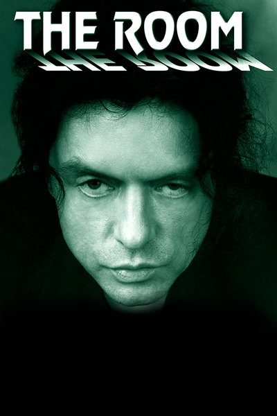
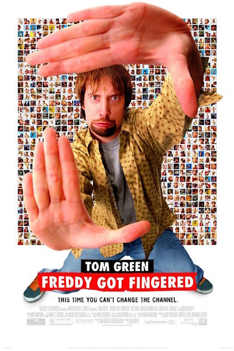
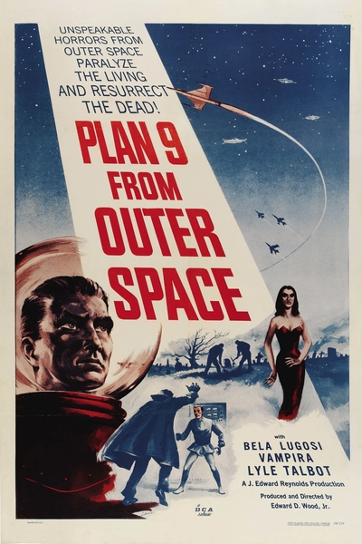

I previously worked as a labourer, but got tired of working in construction . I decided to take the course in order to move into web development.
|  |
The RoomThe Room is a 2003 American independent drama film written, directed, produced by and starring Tommy Wiseau, and co-starring Greg Sestero and Juliette Danielle. The film centers on a melodramatic love triangle between amiable banker Johnny (Wiseau), his deceptive fiancée Lisa (Danielle) and his conflicted best friend Mark (Sestero). A significant portion of the film is dedicated to a series of unrelated subplots, most of which involve at least one supporting character and are left unresolved due to the film's inconsistent narrative structure. According to Wiseau, the title alludes to the potential of a room to be the site of both good and bad events; the stage play from which the screenplay is derived takes place in a single room. |
|  |
Freddy Got FingeredFreddy Got Fingered is a 2001 American surrealist black comedy film directed by Tom Green and written by Green and Derek Harvie. The film follows Green as a 28-year-old slacker who wishes to become a professional cartoonist. The film's plot resembles Green's struggles as a young man trying to get his TV series picked up, which would later become the popular MTV show The Tom Green Show. |
|  |
Plan 9 from Outer SpacePlan 9 from Outer Space (originally titled Grave Robbers from Outer Space) is a 1959 American independent black and white science fiction film, written, produced, directed and edited by Ed Wood, starring Gregory Walcott, Mona McKinnon, Tor Johnson and Vampira. The film also posthumously bills Bela Lugosi as a star (silent footage of the actor had actually been shot by Wood for another, unfinished film just prior to Lugosi's death in August 1956). Plan 9 from Outer Space was released theatrically in 1959 by Distributors Corporation of America (then credited as Valiant Pictures). |